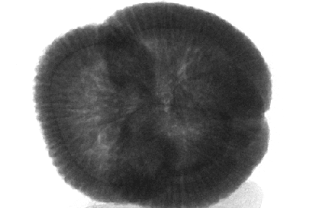

How would you adequately characterize grains in sandstone?
by visual methods and laboratory measurements.
Visual methods (minerals, porosity)
thin sections
SEM
Laboratory measurments: chemical analysis (XRD, XRF, LA-ICPMS, ...)
3D characterization
FIB-SEM
High resolution X-ray CT: 3D analysis of pores, matrix and grains
High resolution X-ray CT: Part 1
With credits to the entire UGCT team (UGCT website)
Introduction
X-rays
can penetrate matter
suited for the internal inspection of objects
Contrast in X-ray radiographs depends on density and atomic number of the materials in question
Radiography: some history
1895: Wilhelm Conrad Röntgen discovers X-rays (Nobelprice 1901)
Wilhelm Conrad RöntgenOne of the first and most famous radiographies with X-rays
Radiology becomes medical sub-speciality first decade of the 1900s
Radiograph
2D representations detected by the detector of all the structures superimposed on each other when X-rays are used to view
a non-uniformly composed material (i.e. of varying density and composition) such as for example the human body.
Radiography-tomography
Late 1960s - early 1970s: Cormack and Hounsfield built first CT scanner or computed axial tomography (CAT) scanner => Nobel
Price for Medicine (1979)
CormackHounsfield
Early developments mainly focused on medical diagnostic imaging
End of the 1970s: application of CT in industrial environment
Radiography-tomography
Radiography-tomography
In 1974, CT was for the first time applied in paleontological research
Period 1985-1990: Start of CT for:
fluid-flow experiments by petroleum engineers
sedimentologists for the analysis of sedimentary structures
Applications of micro-tomography in rock analysis and related research fields started in the middle of the 1990s
The quality of the images and the amount of detail is much higher than that of 15 years ago.
At the moment nano-CT, or better sub-micro-CT, is slowly finding its way in the research field of geomaterials, reaching
resolution of 400 nm and less.
Basic principles I
Tomography: the principle
(1991, John O’Brien, the New Yorker Magazine)
Tomography: the principle
Interactions of X-ray with matter
X-ray CT provides non-destructive 3D visualisation and characterisation,
creating images that map the variation of X-ray attenuation within objects.
Tomography: the principle
Interactions of X-ray with matter
X-ray beam is attenuated when X-ray photons are removed from the beam by interaction with matter. This can happen in 4
different ways:
Photo-electric absorption
Compton scattering
Thomson (Rayleigh) scattering
Pair production
In practice, only the first three interactions may be of importance in X-ray CT
It is not possible to differentiate between these interaction processes directly. Only the intensity (I) of the X-ray beam
passing through the object is detected.
Tomography: the principle
Lambert-Beer law
Measured intensity at detector plane is given by the Lambert-Beer law
μ= linear attenuation coefficient of the object
s = thickness of the object
Lambert-Beer law
Materials with a high linear attenuation coefficient allow X-rays to penetrate only a relatively short distance
Materials with a low attenuation coefficient are more easily penetrated
Lambert-Beer law
Backprojection vs filtered Backprojection
Reconstruction software Octopus
Modular reconstruction package
Inside matters
Tomography

Inside matters
Visualization
Visualization
Visualization
Different fields of application
Foraminifer
Speijer, R.P., Van Loo; D., Masschaele, B., Vlassenbroeck, J., Cnudde, V., Jacobs, P., 2008. Quantifying foraminiferal
growth with high-resolution X-ray computed tomography: New opportunities in foraminiferal ontogeny, phylogeny, and paleoceanographic
applications. Geosphere; August 2008; 4(4):760–763.
“Physical stabilization of soil organic matter calculated from soil pore structure and spatial distribution of organic
matter by X-ray nano CT scanning” (Prof. De Neve)